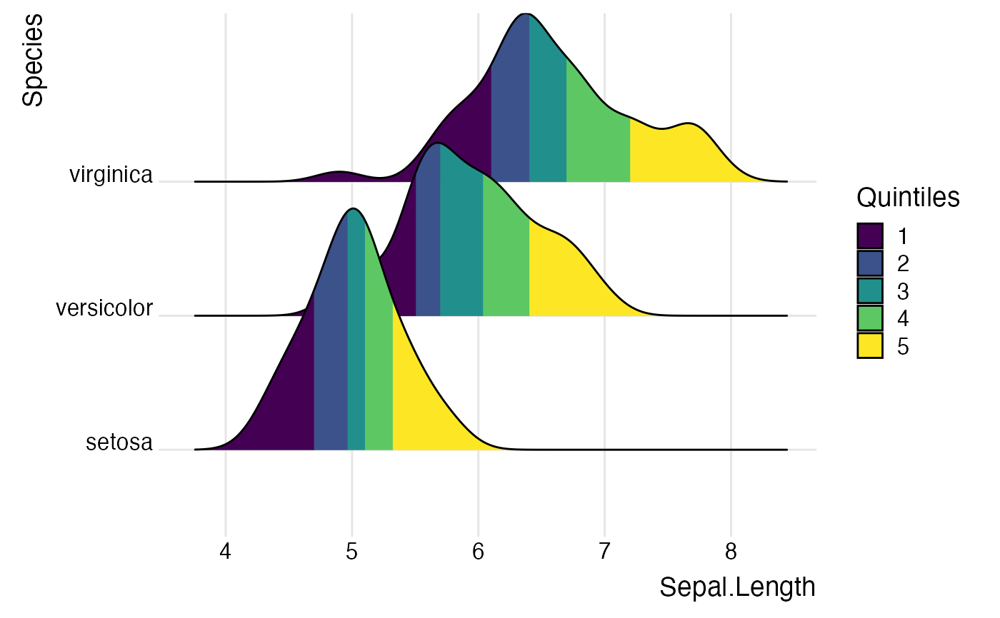
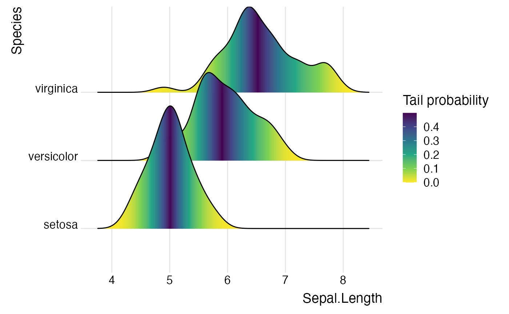
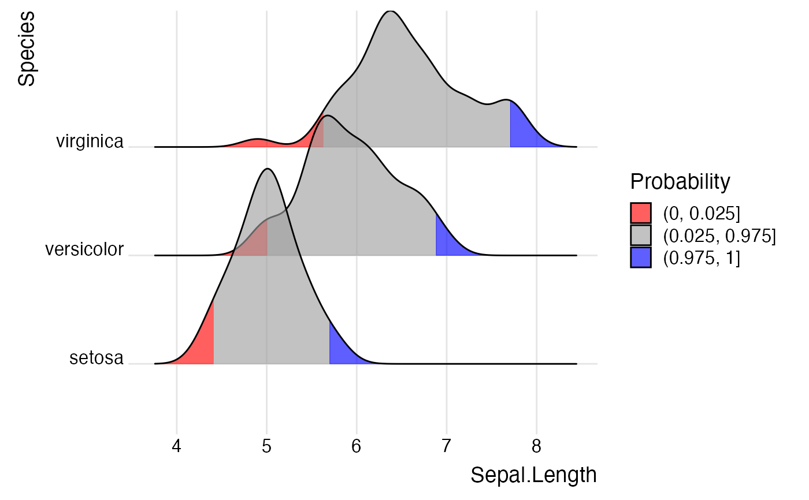

This stat is the default stat used by geom_density_ridges. It is very similar to stat_density,
however there are a few differences. Most importantly, the density bandwidth is chosen across
the entire dataset.
stat_density_ridges(
mapping = NULL,
data = NULL,
geom = "density_ridges",
position = "identity",
na.rm = FALSE,
show.legend = NA,
inherit.aes = TRUE,
bandwidth = NULL,
from = NULL,
to = NULL,
jittered_points = FALSE,
quantile_lines = FALSE,
calc_ecdf = FALSE,
quantiles = 4,
quantile_fun = quantile,
n = 512,
...
)Set of aesthetic mappings created by aes() or
aes_(). If specified and inherit.aes = TRUE (the
default), it is combined with the default mapping at the top level of the
plot. You must supply mapping if there is no plot mapping.
The data to be displayed in this layer. There are three options:
If NULL, the default, the data is inherited from the plot
data as specified in the call to ggplot().
A data.frame, or other object, will override the plot
data.
A function will be called with a single argument,
the plot data. The return value must be a data.frame., and
will be used as the layer data.
The geometric object to use to display the data.
Position adjustment, either as a string, or the result of a call to a position adjustment function.
If FALSE, the default, missing values are removed with
a warning. If TRUE, missing values are silently removed.
logical. Should this layer be included in the legends?
NA, the default, includes if any aesthetics are mapped.
FALSE never includes, and TRUE always includes.
If FALSE, overrides the default aesthetics,
rather than combining with them.
Bandwidth used for density calculation. If not provided, is estimated from the data.
The left and right-most points of the grid at which the density is to be estimated,
as in density(). If not provided, these are estimated from the data range and the bandwidth.
If TRUE, carries the original point data over to the processed data frame,
so that individual points can be drawn by the various ridgeline geoms. The specific position of these
points is controlled by various position objects, e.g. position_points_sina() or position_raincloud().
If TRUE, enables the drawing of quantile lines. Overrides the calc_ecdf setting
and sets it to TRUE.
If TRUE, stat_density_ridges calculates an empirical cumulative distribution function (ecdf)
and returns a variable ecdf and a variable quantile. Both can be mapped onto aesthetics via
stat(ecdf) and stat(quantile), respectively.
Sets the number of quantiles the data should be broken into. Used if either calc_ecdf = TRUE
or quantile_lines = TRUE. If quantiles is an integer then the data will be cut into that many equal quantiles.
If it is a vector of probabilities then the data will cut by them.
Function that calculates quantiles. The function needs to accept two parameters,
a vector x holding the raw data values and a vector probs providing the probabilities that
define the quantiles. Default is quantile.
The number of equally spaced points at which the density is to be estimated. Should be a power of 2. Default is 512.
other arguments passed on to layer(). These are
often aesthetics, used to set an aesthetic to a fixed value, like
color = "red" or linewidth = 3. They may also be parameters
to the paired geom/stat.
library(ggplot2)
# Examples of coloring by ecdf or quantiles
ggplot(iris, aes(x = Sepal.Length, y = Species, fill = factor(stat(quantile)))) +
stat_density_ridges(
geom = "density_ridges_gradient",
calc_ecdf = TRUE,
quantiles = 5
) +
scale_fill_viridis_d(name = "Quintiles") +
theme_ridges()
#> Picking joint bandwidth of 0.181

ggplot(iris,
aes(
x = Sepal.Length, y = Species, fill = 0.5 - abs(0.5-stat(ecdf))
)) +
stat_density_ridges(geom = "density_ridges_gradient", calc_ecdf = TRUE) +
scale_fill_viridis_c(name = "Tail probability", direction = -1) +
theme_ridges()
#> Picking joint bandwidth of 0.181

ggplot(iris,
aes(
x = Sepal.Length, y = Species, fill = factor(stat(quantile))
)) +
stat_density_ridges(
geom = "density_ridges_gradient",
calc_ecdf = TRUE, quantiles = c(0.025, 0.975)
) +
scale_fill_manual(
name = "Probability",
values = c("#FF0000A0", "#A0A0A0A0", "#0000FFA0"),
labels = c("(0, 0.025]", "(0.025, 0.975]", "(0.975, 1]")
) +
theme_ridges()
#> Picking joint bandwidth of 0.181
